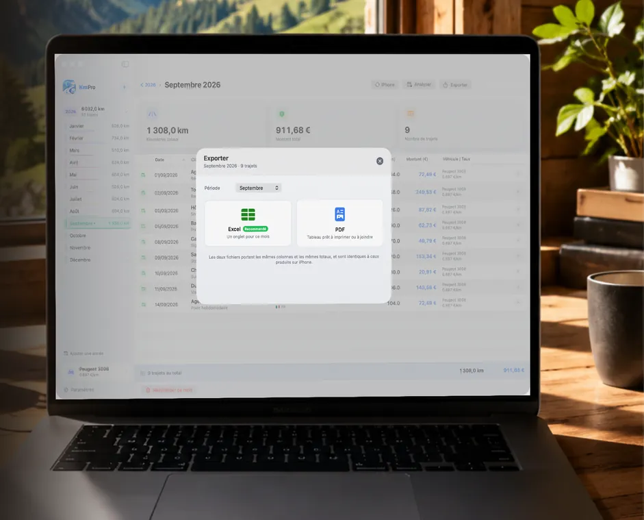
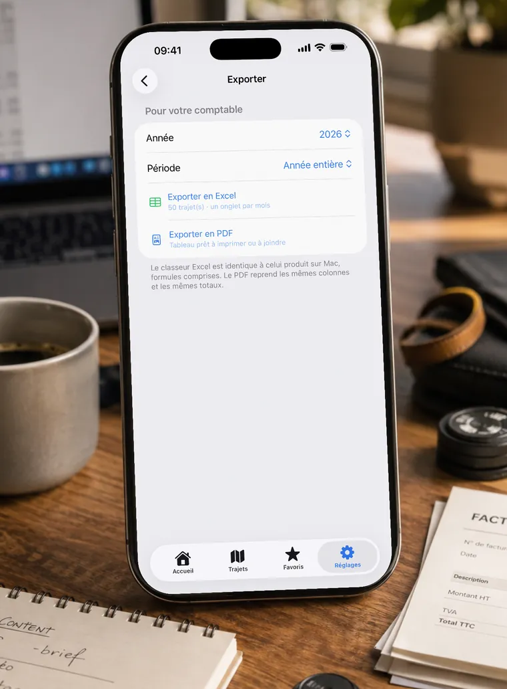

Notes de frais
Gérer ses frais kilométriques et ses notes de frais
Qu’on soit salarié remboursé par son employeur, dirigeant remboursé par sa société ou indépendant, le principe est le même : une note de frais kilométrique n’est solide que si chaque ligne est vérifiable.
Les mentions à faire figurer
Une ligne de frais kilométriques complète comporte :
- la date du déplacement ;
- le point de départ et la destination ;
- le motif professionnel : client, chantier, rendez-vous, intervention ;
- la distance parcourue ;
- le véhicule utilisé et sa puissance fiscale ;
- le montant obtenu en appliquant le barème.
Un total mensuel et un total annuel complètent utilement le tableau : ce sont eux que reprend la comptabilité.

Le remboursement au barème
Quand un employeur rembourse des frais kilométriques dans la limite du barème, ce remboursement est un remboursement de frais professionnels, et non un complément de salaire. C’est la raison pour laquelle le barème est utilisé comme référence, et pourquoi le justificatif compte autant que le montant.
Au-delà du barème, la partie excédentaire suit un autre régime. Si votre entreprise applique un taux différent, faites-le confirmer par votre comptable ou votre service paie.
Mensuel plutôt qu’annuel
La plupart des difficultés viennent du rythme. Reconstituer douze mois de déplacements en fin d’année suppose de retrouver des adresses, des dates et des motifs — c’est long, et c’est là que les oublis coûtent de l’argent.
Noter les trajets au fil de l’eau et sortir un document chaque mois change complètement l’exercice : le travail devient une formalité de quelques minutes, et le total annuel n’est plus qu’une addition.
Combien de temps conserver ?
Les pièces justificatives doivent pouvoir être présentées en cas de contrôle, plusieurs années après. Un tableau conservé dans un fichier, sauvegardé, reste consultable : c’est préférable à des notes éparpillées ou à un agenda qu’on ne retrouvera plus.
Un tableau prêt à transmettre
KmPro produit exactement ce document : un export Excel avec un onglet par mois, un récapitulatif annuel et de vraies formules, ou un PDF prêt à joindre à une note de frais. Les exports restent accessibles même sans abonnement actif — vos pièces comptables ne dépendent pas d’un renouvellement.

Informations données à titre indicatif. Les règles applicables dépendent de votre statut et de votre situation : rapprochez-vous de votre comptable ou de votre service paie.
À lire aussi
- Trouver le barème fiscal de sa voiture : la puissance fiscale
- Barème kilométrique 2025 : le tableau à appliquer
- Barème kilométrique 2026 : tableau officiel et simulateur
- Calculer ses frais kilométriques en France : méthode et exemples
- Comptables : proposez KmPro à vos clients
- Déclarer ses frais kilométriques avec son véhicule personnel
- Indemnités kilométriques 2026 : ce qui change
- Modèle Excel de frais kilométriques : ce qu’il doit contenir